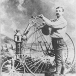
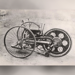

Early steam-powered cycles

In the 1860s Pierre Michaux, a blacksmith in Paris, founded 'Michaux et Cie' ("Michaux and company"), the first company to construct bicycles with pedals called a velocipede at the time, or "Michauline".The first steam powered motorcycle, the Michaux-Perreaux steam velocipede, can be traced to 1867, when Pierre's son Ernest Michaux fitted a small steam engine to one of the 'velocipedes'.
The design went to America when Pierre Lallement, a Michaux employee who also claimed to have developed the prototype in 1863, filed for the first bicycle patent with the US patent office in 1866.In 1868 an American, Sylvester H. Roper of Roxbury, Massachusetts developed a twin-cylinder steam velocipede, with a coal-fired boiler between the wheels. Roper's contribution to motorcycle development ended suddenly when he died demonstrating one of his machines in Cambridge, Massachusetts on June 1, 1896.Also in 1868, a French engineer Louis-Guillaume Perreaux patented a similar steam powered single cylinder machine, the Michaux-Perreaux steam velocipede, with an alcohol burner and twin belt drives, which was possibly invented independently of Roper's. Although the patent is dated 1868, nothing indicates the invention had been operable before 1871.
In 1881, Lucius Copeland of Phoenix, Arizona designed a much smaller steam boiler which could drive the large rear wheel of an American Star high-wheeler at 12 mph. In 1887 Copeland formed the Northrop Manufacturing Co. to produce the first successful 'Moto-Cycle' (actually a three-wheeler)
Experimentation and invention

The very first commercial design for a self-propelled bicycle was a three-wheel design called the Butler Petrol Cycle, conceived of and built by Edward Butler in England in 1884.He exhibited his plans for the vehicle at the Stanley Cycle Show in London in 1884, two years earlier than Karl Benz invented his first automobile who is generally recognized as the inventor of the modern automobile. Butler's vehicle was also the first design to be shown at the 1885 International Inventions Exhibition in London.
The vehicle was built by the Merryweather Fire Engine company in Greenwich, in 1888.[6] the Butler Petrol Cycle (first recorded use of the term).It was a three-wheeled vehicle, with the rear wheel directly driven by a 5/8hp (466W) 600 cc (40 in3; 2¼×5-inch {57×127-mm}) flat twin four stroke engine (with magneto ignition replaced by coil and battery), equipped with rotary valves and a float-fed carburettor (five years before Maybach),[6] and Ackermann steering, all of which were state of the art at the time. Starting was by compressed air.[6] The engine was liquid-cooled, with a radiator over the rear driving wheel. Speed was controlled by means of a throttle valve lever. No braking system was fitted; the vehicle was stopped by raising and lowering the rear driving wheel using a foot-operated lever; the weight of the machine was then borne by two small castor wheels. The driver was seated between the front wheels.[6] It wasn't, however, a commercial success, as Butler failed to find sufficient financial backing.
Another early internal combustion, petroleum fueled motorcycle was the Petroleum Reitwagen. It was designed and built by the German inventors Gottlieb Daimler and Wilhelm Maybach in Bad Cannstatt, Germany in 1885.[ This vehicle was unlike either the safety bicycles or the boneshaker bicycles of the era in that it had zero degrees of steering axis angle and no fork offset, and thus did not use the principles of bicycle and motorcycle dynamics developed nearly 70 years earlier. Instead, it relied on two outrigger wheels to remain upright while turning.The inventors called their invention the Reitwagen ("riding car"). It was designed as an expedient testbed for their new engine, rather than a true prototype vehicle.